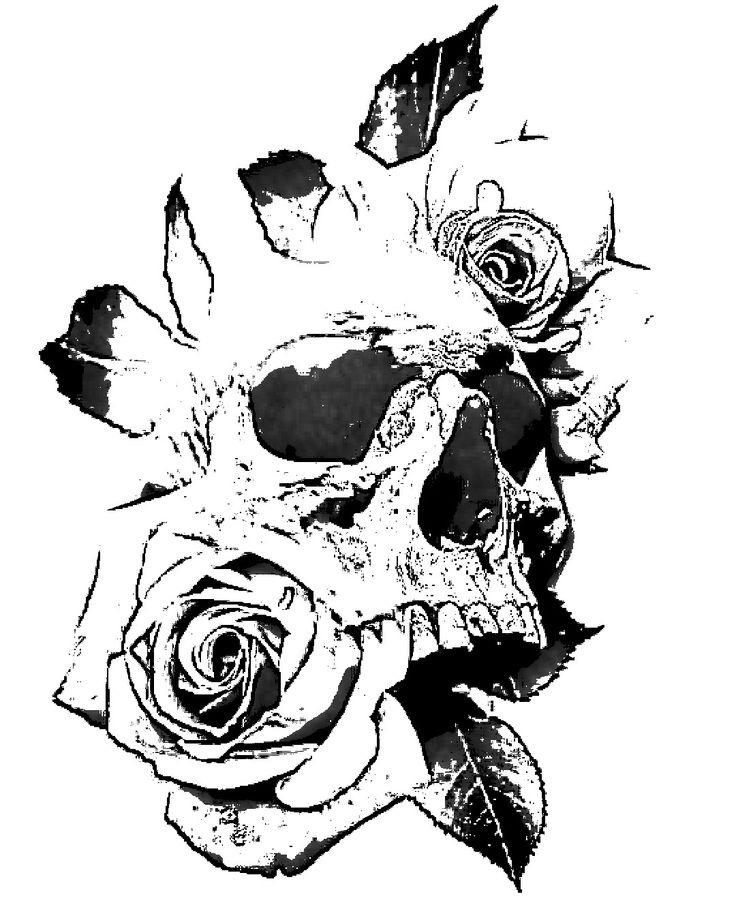
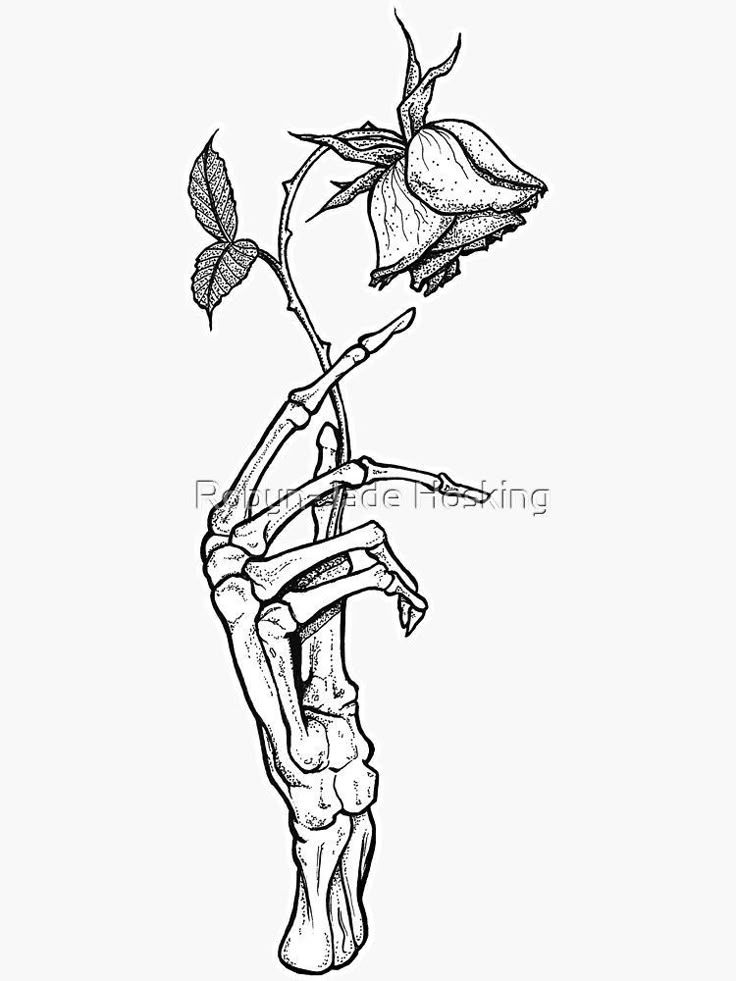

01 / PERSONAVITOR · ATELIÊ
O trabalho não termina no traço.
- Encontrar pedidos e referências entre conversas.
- Perceber quem espera desenho, retorno ou horário.
- Conciliar sessões sem sobrepor a agenda.
Uma experiência para o que fica na pele
Do primeiro pedido ao último retoque — um caminho mais claro para quem cria a tatuagem e para quem a leva consigo.

Tinta Negra Tattoo StudioA experiência antes do sistema
Desenho, aprovação, sessões e retoque acontecem em momentos diferentes. Quando o acompanhamento vive em conversas, fica difícil saber o que já aconteceu — e o que vem depois.
Bruna · 27 · designer
Bruna chega com uma ideia importante e usa o celular para transformá-la em um projeto. Ela precisa sentir que a história está sendo acompanhada — não que desapareceu depois de enviar uma mensagem.
Vitor · tatuador
Vitor alterna entre criar, atender e organizar o trabalho. No computador, precisa enxergar prioridades e compromissos sem montar o quebra-cabeça de cada projeto a cada consulta.
Da ideia à cicatrização
Cada projeto mantém sua etapa e seu histórico. Cliente e tatuador sabem onde a jornada está — e qual ação cabe a cada pessoa.
Cliente descreve ideia e referência.
Tatuador envia a proposta visual.
Cliente aprova ou pede ajustes.
Horários definidos conforme a duração.
Reserva prevista após a cicatrização.
Histórico registra a conclusão.
Duas rotinas · um só fluxo
Pede ou edita enquanto o projeto está no início, acompanha o status e responde ao desenho.
Enxerga visão geral, agenda e projetos; abre a ficha para enviar desenho ou registrar sessões.
Aplica permissões por perfil, confere disponibilidade e mantém os registros ligados ao projeto.
Agenda que respeita o tempo
Não basta escolher uma data. A disponibilidade leva em conta duração, expediente e outros compromissos — para evitar surpresas para os dois lados.
Antes de confirmar o retoque, Vitor pode ajustar duração e horário; a disponibilidade é calculada novamente.
Uma arquitetura enxuta
Telas adaptadas para celular e computador: pedido, área da cliente, visão geral, agenda e ficha.
Autentica, valida etapas, aplica permissões por persona e calcula horários livres.
Guarda usuários, grupos, projetos e passos em registros persistentes.
O valor é continuidade
Bruna acompanha uma história que é dela. Vitor conduz um estúdio com mais contexto. Cada etapa deixa de ser uma mensagem perdida e passa a fazer parte do projeto.
